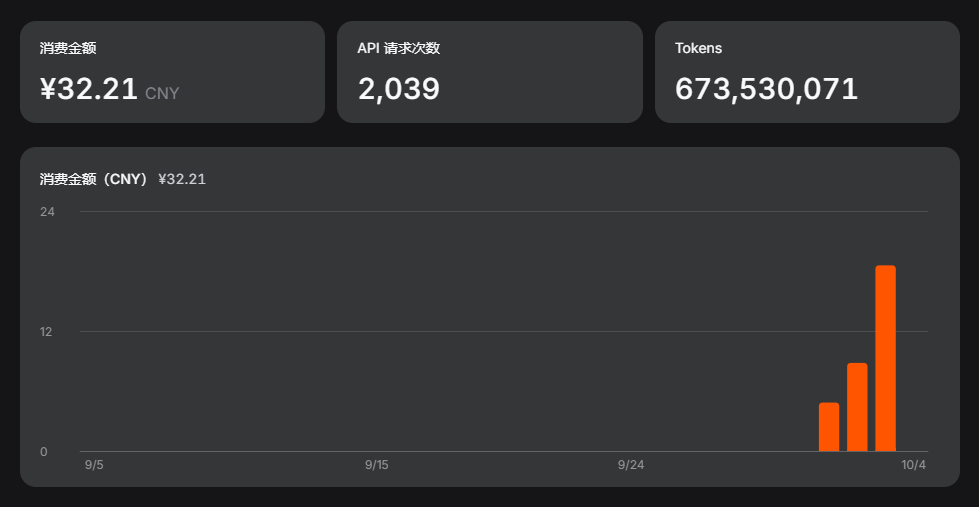

懒得手动审查工作流（其实是大部分都看不懂~(￣▽￣)~），所以我想让两个agent互相监督。计划让Zcode写代码，输出结果和报告/DSH负责审计报告然后发送给Zcode下一步指令，或者给出判断。我把这个想法给了Chatgpt，让它给我几个prompt*，我用DSH来vibe code，然后漫长的工作就开始了... 目前的会话统计：
模型用时 188分14秒
工具调用用时 608分57秒
首 token 平均（TTFT） 1.7秒
输出速度（TPS） 275 tok/s已使用token:

现在的阶段我是完全完全的看不懂...只是机械性的将DSH的阶段性报告丢给GPT，然后把GPT给的下一阶段的prompt再丢给DHS，循环往复...